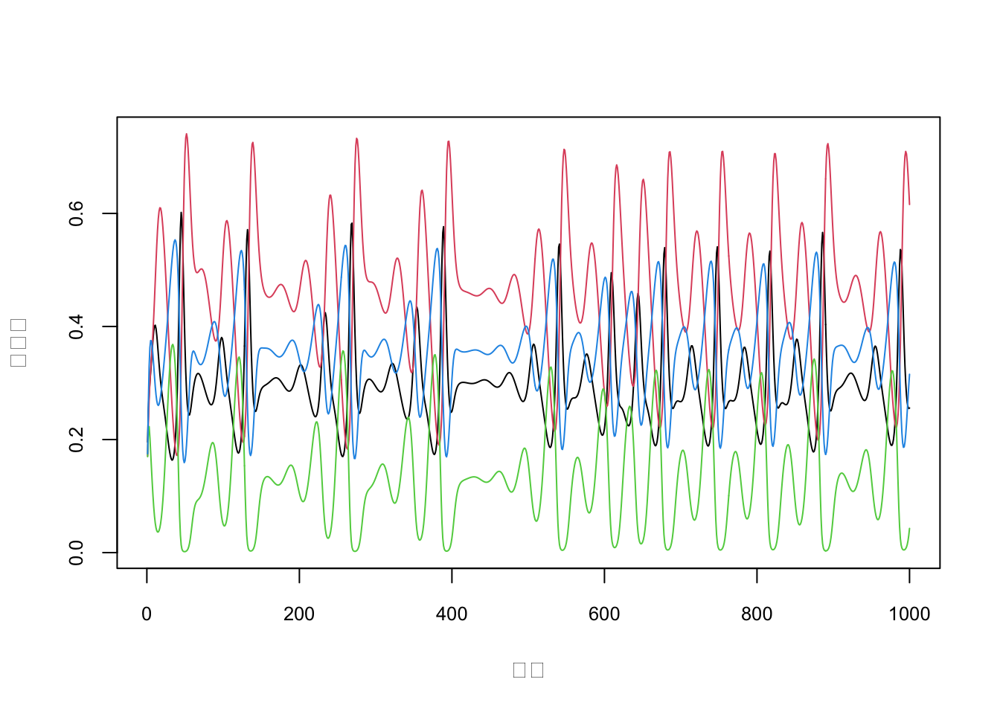

Code
lv_fun = \(A, r, N) r*N * (1 - A %*% N)
model = function(time, dt=1000, A, r, N0){
mat = matrix(0, ncol=length(N0), nrow=time)
mat[1,] = N = N0
for(t in 2:time){
for(ddt in 1:dt){
dn = lv_fun(A, r, N)
N = N+dn/dt
}
mat[t,] = N
}
mat
}
r = c(1, 0.72, 1.53, 1.27)
A = t(matrix(c(1, 1.09, 1.52, 0,
0, 1, 0.44, 1.36,
2.33, 0, 1, 0.47,
1.21, 0.51, 0.35, 1), 4, 4))
mat = model(time=1000, dt=1000, A, r, N0=runif(4, 0.1, 0.2))
plot(mat[,1])Code
plot(0, type='n', xlim=c(1,nrow(mat)), ylim = range(mat), cex.axis = 0.8, xlab="時間", ylab = "個体数")
for(l in 1:ncol(mat)) lines(mat[,l], col=l)